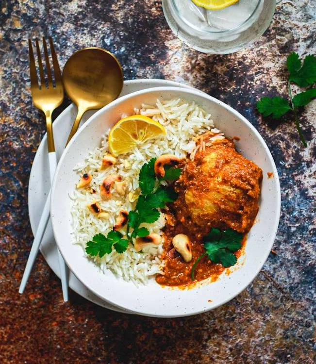

Produits frais
Des ingrédients frais, sélectionnés avec soin.
Chaque jour, un seul plat. Nous cuisinons uniquement les quantités commandées afin de garantir fraîcheur, qualité et limiter le gaspillage alimentaire.

Résiliable à tout moment.
Votre adhésion devient immédiatement un avoir valable sur vos 3 prochaines commandes.
Plus qu'un repas, nous souhaitons proposer une cuisine maison, simple, fraîche et préparée avec attention.
Des ingrédients frais, sélectionnés avec soin.
Un plat unique chaque jour, cuisiné maison.
Livraison rapide à Lyon, pour particuliers et entreprises.
Nous cuisinons au plus près des commandes pour limiter le gaspillage.
Une organisation simple, pensée pour garantir fraîcheur et qualité à chaque commande.
Un seul plat chaque jour, cuisiné maison avec des produits de saison.
Réservez en ligne avant 16 h la veille.
Après confirmation, votre commande ne peut plus être modifiée ni annulée.
Livraison gratuite entre 11 h 30 et 12 h 30 à Lyon.
Chaque semaine, notre menu évolue selon les saisons, les produits disponibles et l'inspiration de notre cuisine.


Quelques retours de nos clients. Cette section pourra être synchronisée avec Google Reviews.
"Excellent repas, très frais et parfaitement préparé. On sent vraiment la cuisine maison."
Sophie M."Livraison ponctuelle, portions généreuses et très bon rapport qualité-prix."
Julien R."Une belle découverte. Les plats changent régulièrement et sont toujours délicieux."
Camille D.